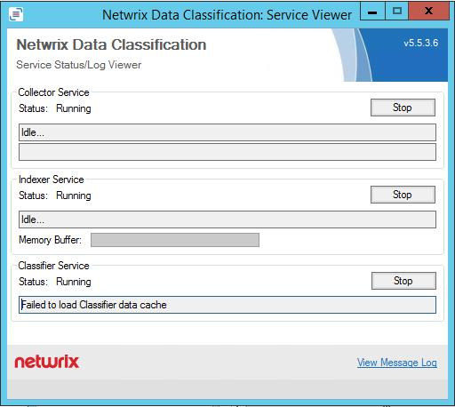

Scenario
The Netwrix Data Classification: Service Viewer displays the following error message for the
Classifier Service:
Failed-to-load-Classifier-data-cache

Solution
Navigate to http://hostname/conceptQS/Taxonomies/GlobalSettings and confirm the
status of each taxonomy. This error will be caused by a failed connection to a SharePoint
termset. Find the faulting termset and update the credentials and/or confirm account
permissions for that termset. Restart the classifier service and then the service should
immediately begin processing documents pending classifications.